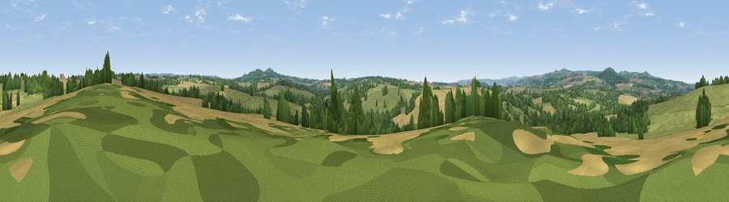

Viewpoint near St Erth
#30608 in England · top 70% of its area beats it · near St ErthWhere it is
The exact computed spot (SW 55775 33825). Click the marker for map links.
The view, rendered

A 360° render of this exact spot computed from the terrain model, tree cover and land cover — summer colours, afternoon light, calibrated against photographs of famous viewpoints. Real trees, hedges and buildings will differ in detail.
The panorama
Grey silhouette: terrain skyline in each direction (720 bearings, Earth curvature and refraction included). Dashed green: skyline with trees (+15 m) and buildings (+8 m) as obstacles. Blue strip: how far the ground is visible on each bearing.
Where the view opens
Wedge length = distance to the farthest visible ground on that bearing (vegetation-aware). Rings at 10, 25 and 50 km.
What fills the view
43% grassland · 31% cropland · 25% woodland · 1% built-up
Angular shares of the visible panorama (visual magnitude), not map area. Landscape diversity 0.50 (0–1 Shannon).
Key numbers
More beautiful places nearby
The staircase of upgrades: each row has a higher view potential than everything closer. Driving times are estimates from straight-line distance, calibrated against real road routing — check an actual route before setting out.
| Place | Direction | Drive | Score |
|---|---|---|---|
| Godolphin Hill | ESE · 4 km | ~10 min | 81.5 |
| Tregonning Hill | SE · 6 km | ~12 min | 83.0 |
| Rosewall Hill | NW · 9 km | ~17 min | 88.0 |
| Viewpoint near Combe Martin | NE · 154 km | ~177 min | 88.9 |
| Holdstone Hill | NE · 155 km | ~178 min | 90.2 |
| The Knoll | ENE · 204 km | ~222 min | 91.0 |
50.15406, -5.42032 · source: screening · position refined by local search. Computed location — check access rights before visiting.